Ideal Jobs
Ayesha Babar: UX- UI Designer Lead Esther Ochieng – Reid: Entry Level Cybersecurity Analyst Kur Bol Kur: Information Technology Systems Engineer Mathew Dolence: Network Engineer Moustafa Al-Meahi: IT Service Operations Manager
Key for Tables:
❌ = No
✔ = Yes
➖ = Maybe
Ayesha’s Babar’s Ideal Job - UX/UI Designer Lead:
Description of Job:
This job offers the local position in UX/UI design. The applicant will be leading the UX/UI designers. The applicant will be leading UX/UI designers. They offer good salary (from $80,000 to $100,000), along with life and health insurance. The job is flexible, allowing the applicant to work from home.
Skills required for this Job:
This job requires the applicants to:
Ayesha’s current skills:
How will Ayesha acquire the required skills?
Ayesha knows that she has a long way before she can acquire all the skills required for this job, but she will work hard to get there. Ayesha is planning to complete a bachelor’s degree in arts (digital experience and interaction design) to achieve her goal of becoming a UX/UI designer. Hopefully, nearing the end of the degree, she will have begun her internship. After completing her internship, she will hopefully get a good job to gain experience in the field, before she can land any leadership roles. Ayesha believes that following this path will get her all the skills she requires. Ayesha’s plan will probably take her up to 10-12 years to complete.
Esther Ochieng – Reid’s Ideal Job – Entry Level Cybersecurity Analyst:
Description of Job:
Esther Ochieng – Reid’s Ideal Job – Entry Level Cybersecurity Analyst:
Description of Job:
This company (Halcyon Knights Pty Ltd) is ranked as Fast Company’s top 50 most innovative companies globally, this company is looking for 2 new Entry Level Cybersecurity Analysts to join their team. They have a flexible culture, and they have a huge focus on up-skilling and developing their teams – these roles will ensure the applicants success in the world of Cybersecurity.
Skills required for this Job:
This job requires the applicants to:
Esther’s current skills:
How will Esther acquire the required skills?
Esther knows it is going to be a long way before she can acquire all the skills required for this job, but she will work hard to reach her goals. Esther is planning to complete a bachelor’s degree in Information Technology – to achieve her goal of becoming an Entry Level Cybersecurity Analyst. After Esther completes her bachelor’s degree she will hopefully get a good job to gain experience in the field. Esther believes that her plan will take a few years to accomplish – but she is willing to give it her all.
Kur Bol Kur – Information Technology Systems Engineer:
Description of Job:
Kur Bol Kur – Information Technology Systems Engineer:
Description of Job:
This position is within a company called TechBrain. TechBrain deal with numerous companies; government and non-for-profit organizations that are in different industries. TechBrain provide their clients with proactive solutions which help to improve their client’s productivity and efficiency as a business. This job position is appealing to Kur as it seems to be well advanced and it would be interesting to be able to work with many different types of companies within multiple industries. It will also mean that Kur would have a variety of tasks to complete or assist with and not be stuck doing the exact same thing or dealing with the same clients every time.
Skills required for this Job:
This job requires the applicants to:
Kur’s Current Skills:
How will Kur acquire the required skills?
For Kur to obtain the necessary skills needed for this job position or any other job within the Information Technology sector. Kur intends on completing all 24 units that make up the Bachelor of Information with Royal Melbourne Institute of Technology (RMIT) which covers a broad range of topics. Kur will then use the skills and experience that he has acquired to gain employment within the IT sector.
Matthew Dolence – Network Engineer:
Description of Job:
Matthew Dolence – Network Engineer:
Description of Job:
This role is in the Service Operations Command Centre (SOCC) of Vocus. Team members constantly maintain the operation, maintenance, and network facilities of the Vocus network facilities of the Vocus network. The SOCC also provide customer interactions regarding wholesale and retail services that are subscribed to the Vocus network. SOCC members need to maintain the security of the network by monitoring packets to determine whether they are friend or foe, are all within company standards and raising incidents when they arise. Network engineering has always been intriguing to Matthew as well as being close to his heart after completing his Diploma in Telecommunications. Managing a network on this scale would be a daunting task but Matthew would enjoy the challenge every minute presented as it would be a dynamic world.
Skills required for this Job:
This job requires the applicants to:
Matthew’s Current Skills:
How will Matthew acquire the required skills?
Although Matthew has some of the experience and knowledge required, there are some areas in which he can improve and expand upon. This degree (Bachelor of Information Technology) will allow him to have a comprehensive understanding of a dynamic workload, putting demand on his work/life balance, working with teams, gaining intimate knowledge within the IT sector and it may allow Matthew to get used to a 27/7, 365 shift work rosters.
Moustafa Al-Meahi – IT Service Operations Manager:
Description of Job:
Moustafa Al-Meahi – IT Service Operations Manager:
Description of Job:
This position is within a company called Office Operations Excellence Team. The team provides the needed engineering experience for software engineers across the broader Microsoft Office organization. The IT Service Operations Manager is a critical role on the team, they are an authority on infrastructure & service operations and systems management. The IT Service Operations Manager and the team are responsible for the infrastructure operations for the Office Engineering System used to ship all versions of Office worldwide. The IT Service Operations Manager and the team will carry key accountabilities to ensure the highest standards of the security systems health, as well as high quality operations.
Skills required for this Job:
This job requires the applicants to:
Moustafa’s Current Skills:
How Moustafa will acquire the required Skills?
Moustafa knows it is going to be a long time for him to acquire - all the skills required for becoming an IT Service Operations Manager at The Office Engineering Team – but he will work hard to achieve his goals. Moustafa is planning to complete a bachelor’s degree in information technology – to achieve his goal of becoming an IT Service Operations Manager. Moustafa believes that this will at least a few years to complete – but he is willing to give it his all.
Analysis:
Analysis:
Comparison between Ayesha’s and all other team members Ideal Jobs: The similarities between Ayesha’s and Esther’s Ideal jobs are that they require the applicants to work in teams to complete tasks. Another similarity would be that the applicants must have a qualification in IT from University. A final similarity is that both jobs require the applicant to be flexible. A difference between their 2 ideal jobs – is that both jobs are in different industries in IT – Ayesha’s ideal job is UX/UI Designer Lead while Esther ideal job is Entry Level Cybersecurity Analyst. Another Difference is that in Ayesha’s Ideal Job – the applicant does not have to work at the office. While Esther’s Ideal Job - the applicant must work at an office.
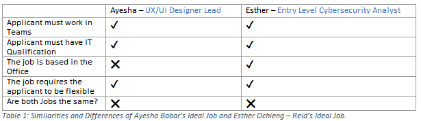The similarities between Ayesha’s and Esther’s career plans are that; Ayesha and Esther must obtain the Bachelor of Information Technology – to be able to apply for their Ideal Jobs. A final similarity between their career plans is that; both their tasks are going to take a few years to complete their career plans. Some differences between Ayesha’s and Esther’s career plans are that; after Ayesha obtains her Bachelor In Information Technology – she needs to obtain the bachelor’s degree in arts (digital experience and interaction) to be able to meet all the requirements for applying for the position of UX/UI designer – while Esther only needs to obtain the bachelor’s degree of Information Technology to be able to meet all the requirements for applying for the position of Entry Level Cybersecurity Analyst at Halcyon Knights. A final difference from the 2 career plans is that Ayesha’s career plan – is probably going to take 10-12 years to complete (due to bachelor’s degree of Information Technology and the bachelor’s degree in arts (digital experience and interaction design)). Whilst Esther’s career plan will take at least 3 years to complete (due to only needing the bachelor’s degree of Information Technology).
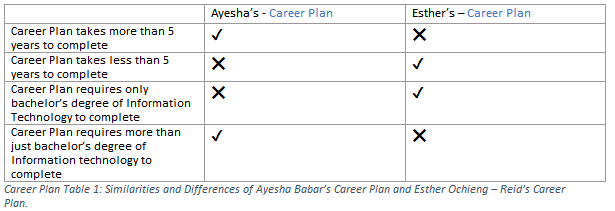The similarities between Ayesha’s and Kur’s Ideal jobs are that they require the applicants to have experience in fast-moving and agile environments. Another similarity between the 2 jobs is that they must have exceptional people skills. Another similarity between the 2 jobs is that they both require the applicant to have a Love of Learning. Another similarity between the 2 jobs is that the job – requires the applicant to work in teams to complete tasks. A final similarity between the 2 jobs is that they both require the applicant to have a qualification in IT either from University or previous experience. Some differences between Ayesha’s and Kur’s Ideal Jobs are that – they are both different roles. Another difference would be that Kur’s Ideal job is Office – based, while in Ayesha’s Ideal job – the applicant can work at home. Another difference between the 2 jobs is that in Kur’s Ideal job – the applicant must work with clients. While in Ayesha’s Ideal job – the applicant does not have to work with clients. A final difference is that Kur’s Ideal job – the applicant works with a range of different companies in different industries, while Ayesha’s does not.
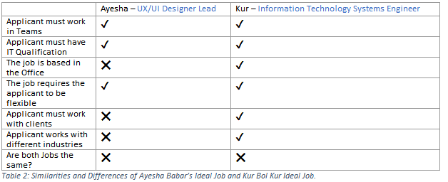The similarities between Ayesha’s and Kur’s Career Plans are that; Ayesha and Kur must obtain the bachelor’s degree of Information Technology to be able to apply for their ideal jobs. A final similarity between the 2 career plans is that – both the career plans are going to take a few years to complete. Some differences between the Ayesha’s career plan and Kur’s career plan are that; after Ayesha obtains her bachelor’s degree of Information Technology, she needs to obtain the bachelor’s degree in arts (digital experience and interaction) to be able to meet all the requirements for applying for the position of UX/UI designer – while Kur only needs to obtain the bachelor’s degree of Information Technology to be able to apply for the position of Information Technology Systems Engineer at TechBrain. A final difference from the 2 Career Plans is that - Ayesha’s career plan – will take 10-12 years to complete (due to bachelor’s degree of Information Technology and the bachelor’s degree in arts (digital experience and interaction design)). Whilst Kur’s career plan will take at least 3 years to complete (due to only needing the bachelor’s degree of Information Technology).
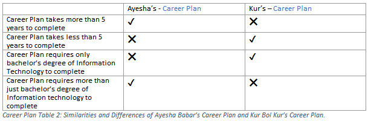The similarities between Ayesha’s and Matthew’s Ideal jobs are that; they both require the applicant to have a qualification in IT from University or previous experience – to be able to apply. Another similarity between the 2 jobs is that – they both require the applicants to be able to manage a fast-paced and ever-changing environment. A final similarity between the 2 jobs is that they both require the applicant to work in teams to be able to solve tasks. The differences between Ayesha’s and Matthew’s Ideal jobs are that; Matthew’s Ideal job requires the applicant to work at an office – while in Ayesha’s job – the applicant can work at home. A final difference would be that both Ideal jobs are different – they are not the same role.
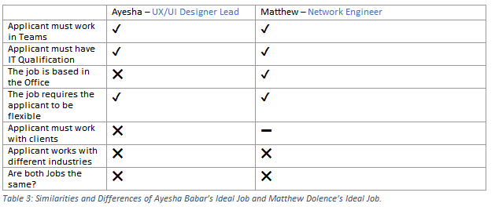The similarities between Ayesha’s and Matthew’s Career Plans are that; Ayesha and Matthew must obtain the bachelor’s degree of Information Technology to be able to apply for their Ideal jobs. A final similarity between the 2 career plans is that; both career plans are going to take a few years to complete. Some differences between the 2 career plans are that; Ayesha’s career plan will take 10-12 years to complete (due to obtaining the bachelor’s degree of Information Technology and obtaining the bachelor’s degree in arts (digital experience and interaction design)) to be able to apply for UX/UI designer. While Matthew will take at least 3 years (due to obtaining only the bachelor’s degree of Information Technology) to be able to apply for Network Engineer.
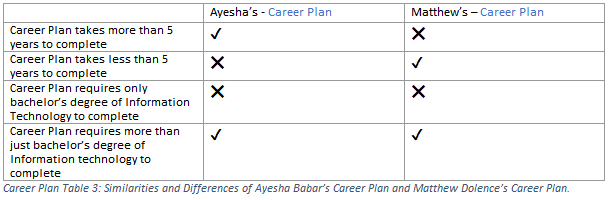The similarities between Ayesha’s and Moustafa’s Ideal jobs are that; they both require the applicant to have a qualification in IT from University or previous experience to be able to apply. Another similarity between the 2 jobs is that they both require the applicant to work in teams. A final similarity between the 2 jobs is that – they both require the applicants to be able to manage a fast-paced and ever-changing environment. Some differences between Ayesha’s and Moustafa’s are that in Moustafa’s ideal job – the applicant will be able to build, develop, and lead a high performing team of IT service operations ICs (while the applicant in Ayesha’s Ideal job can only be part of a team). Another difference between the 2 Ideal jobs is that in Moustafa’s job the applicant must work in an office – while the applicant for Ayesha’s Ideal job can work at home. A final difference is that both jobs are not the same role.
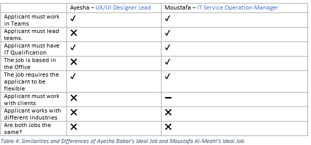The similarities between Ayesha’s and Moustafa’s Career Plans are that; Ayesha and Moustafa must obtain the bachelor’s degree of Information Technology to be able to apply for their ideal jobs. A final similarity between the 2 career plans – is that they are both going to take a few of years to accomplish. The differences between Ayesha’s and Moustafa’s Career Plans are that; Ayesha’s career plan is going to take 10-12 years to accomplish (due to obtaining bachelor’s degree of Information Technology and obtaining bachelor’s degree in arts (digital experience and interaction design) to be able to apply for UI/UX designer. While Moustafa’s career plan is going to take 3 years to accomplish (due to only obtaining bachelor’s degree of Information Technology) to be able to apply for IT Service Operation Manager.
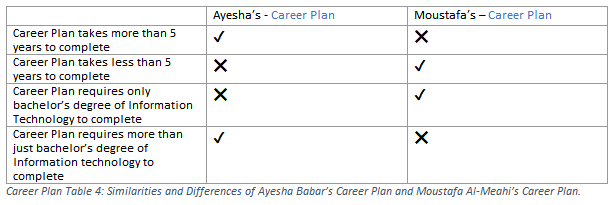Comparison between Esther’s and all other team members Ideal Jobs: The similarities between Esther’s and Ayasha’s Ideal jobs are that they require the applicants to work in teams to complete tasks. Another similarity would be that the applicants must have a qualification in IT from University. A final similarity is that both jobs require the applicant to be flexible. A difference between their 2 ideal jobs – is that both jobs are different jobs – Esther ideal job is Entry Level Cybersecurity Analyst. While Ayesha’s ideal job is UX/UI Designer Lead. Another Difference is that in Esther’s Ideal Job – the applicant must work at an office. While Ayesha’s Ideal Job - the applicant does not have to work at the office.
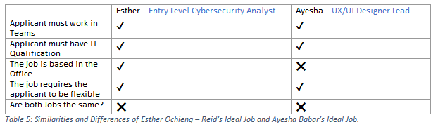The similarities between Esther’s and Ayesha’s career plans are that; Esther and Ayesha must obtain the Bachelor of Information Technology – to be able to apply for their Ideal Jobs. A final similarity between their career plans is that; both their tasks are going to take a few years to complete their career plans. Some differences between Esther’s and Ayesha’s career plans are that; Esther only needs to obtain the bachelor’s degree of Information Technology to be able to meet all the requirements for applying for the position of Entry Level Cybersecurity Analyst at Halcyon Knights. While after Ayesha obtains her bachelor’s degree In Information Technology – she needs to obtain the bachelor’s degree in arts (digital experience and interaction) to be able to meet all the requirements for applying for the position of UX/UI designer – A final difference from the 2 career plans is that Esther’s career plan will take at least 3 years to complete (due to only needing the bachelor’s degree of Information Technology). Whilst Ayesha’s career plan – is probably going to take 10-12 years to complete (due to bachelor’s degree of Information Technology and the bachelor’s degree in arts (digital experience and interaction design)).
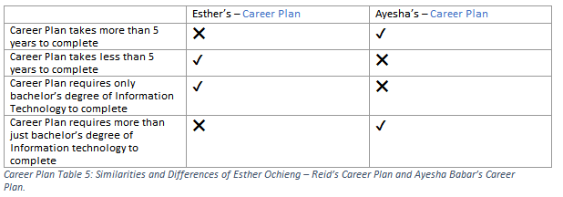The similarities between Esther’s and Kur’s Ideal jobs are that they require the applicants to have experience in fast-moving and agile environments. Another similarity between the 2 jobs is that they must have exceptional people skills. Another similarity between the 2 jobs is that they both require the applicant to have a Love of Learning. Another similarity between the 2 jobs is that the job – requires the applicant to work in teams to complete tasks. A final similarity between the 2 jobs is that they both require the applicant to have a qualification in IT either from University or previous experience. Some differences between Esther’s and Kur’s Ideal Job are that – they are both different roles. Another difference between the 2 jobs is that in Kur’s Ideal job – the applicant must work with clients. While in Esther’s Ideal job – the applicant does not have to work with clients. A final difference is that Kur’s Ideal job – applicant works with a range of different companies in different industries, while Esther’s does not.
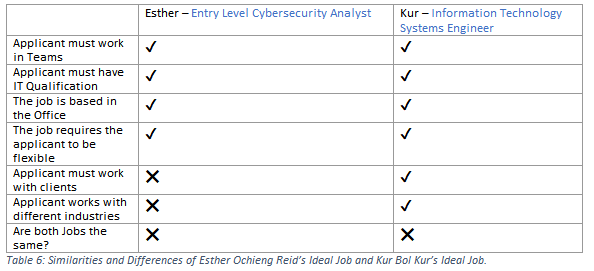The similarities between Esther’s and Kur’s Career Plans are that; Esther and Kur must obtain the bachelor’s degree of Information Technology to be able to apply for their Ideal jobs. A final similarity between the 2 Career plans is that – both the career plans are going to take a few years to complete. There are no differences between Esther’s and Kur’s career plans.
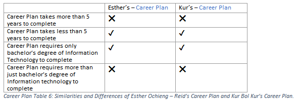The similarities between Esther’s and Matthew’s Ideal jobs are that; they are both require the applicant to have a qualification in IT from University or previous experience – to be able to apply. Another similarity between the 2 jobs is that – they both require the applicants to be able to manage a fast-paced and ever-changing environment. A final similarity between the 2 jobs is that they both require the applicant to work in teams to be able to solve tasks. The difference between Esther’s and Matthew’s ideal jobs is that they are different – they are not the same roles.
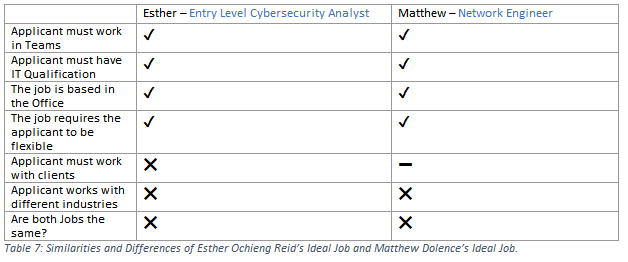The similarities between Esther’s and Matthew’s Career Plans are that; Esther and Matthew must obtain the bachelor’s degree of Information Technology to be able to apply for their Ideal jobs. A final similarity between the 2 career plans is that; both career plans are going to take a few years to complete. There are no differences between Esther’s and Matthew’s career plans.
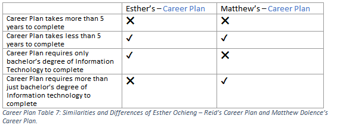The similarities between Esther’s and Moustafa’s ideal jobs are that; they both require the applicant to have a qualification in IT from University or previous experience to be able to apply. Another similarity between the 2 jobs is that – they both require the applicants to be able to manage fast-paced and ever-changing environment. Some differences between Esther’s and Moustafa’s Ideal jobs are that in Moustafa’s ideal job – the applicant will be able to build, develop, and lead a high performing team of IT service operations ICs (while the applicant in Esther’s ideal job can only be part of a team). A final difference is that both jobs are not the same role.
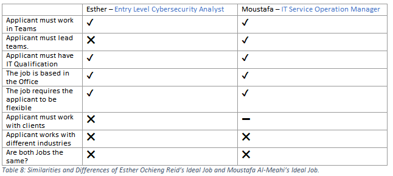The similarities between Esther’s and Moustafa’s Career Plans are that; Esther and Moustafa must obtain the bachelor’s degree of Information Technology to be able to apply for their ideal jobs. A final similarity between the 2 career plans – is that they are both going to take a few years to accomplish. There are no differences for Esther’s and Moustafa’s Career plans.
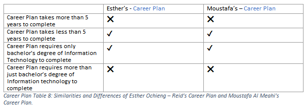Comparison between Kur’s and all other team members Ideal Jobs: The similarities between Kur’s and Ayesha’s Ideal jobs are that they require the applicants to have experience in fast-moving and agile environments. Another similarity between the 2 jobs is that they must have exceptional people skills. Another similarity between the 2 jobs is that they both require the applicant to have a Love of Learning. Another similarity between the 2 jobs is that both the jobs – requires the applicant to work in teams to complete tasks. A final similarity between the 2 jobs is that they both require the applicant to have a qualification in IT either from University or previous experience. Some differences between Kur’s and Ayesha’s Ideal jobs are that – they are both different roles. Another difference would be that – Kur’s Ideal job is Office-based, while in Ayesha’s ideal job – the applicant can work at home. Another difference between the 2 jobs is that in Kur’s Ideal job – the applicant must work with clients. While in Ayesha’s Ideal job – the applicant does not have to work with clients. A final difference is that Kur’s Ideal job – the applicant works with a range of different companies in different companies in different industries, while Ayesha’s does not.
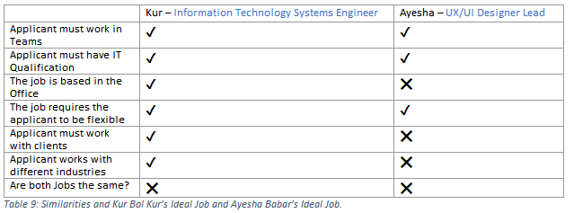The similarities between Kur’s and Ayesha’s Career Plans are that; Kur and Ayesha must obtain the bachelor’s degree of Information Technology to be able to apply for their ideal jobs. A final similarity between the 2 career plans is that – both the career plans are going to take a few years to complete. Some differences between Kur’s and Ayesha’s career plans are that; after Ayesha obtains her bachelor’s degree of Information Technology, she needs to obtain the bachelor’s degree in arts (digital experience and interaction) to be able to meet all the requirements for applying for the position of UX/UI designer – while Kur only needs to obtain the bachelor’s degree of Information Technology to be able to apply for the position of Information Technology Systems Engineer at TechBrain. A final difference from the 2 Career Plans is that – Kur’s career plan will take at least 3 years to complete (due to only needing the bachelor’s degree of Information Technology). Whilst Ayesha’s career plan – will take 10 -12 years to complete (due to bachelor’s degree of Information Technology and the bachelor’s degree ion arts (digital experience and interaction)).
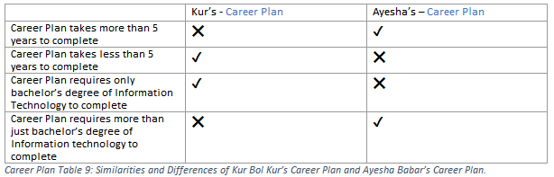The similarities between Kur’s and Esther’s ideal jobs are that they require the applicants to have experience in fast-moving and agile environments. Another similarity between the 2 jobs is that they must have exceptional people skills. Another similarity between the 2 jobs is that they both require the applicant to have a Love of Learning. Another similarity between the 2 jobs is that they both require the applicant to have a qualification in IT either from University or previous experience. Some differences between Kur’s and Esther’s Ideal job are that – they are both different roles. Another difference between the 2 jobs is that in Kur’s ideal job – the applicant must work with clients. While in Esther’s Ideal job – the applicant does not have to work with clients. A final difference between both the jobs is that in Kur’s Ideal job – the applicant works with a range of different companies in different industries, while Esther’s does not.
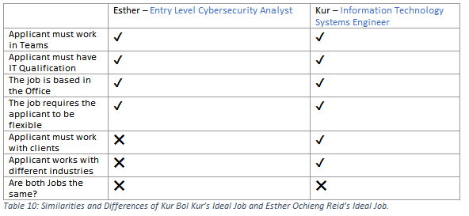The similarities between Kur’s and Esther’s Career plans are that; Kur and Esther must obtain the bachelor’s degree of Information Technology to be able to apply for their Ideal jobs. A final similarity between the 2 Career plans is that – both the career plans are going to take a few years to complete. There are no differences between Kur’s and Esther’s Career plans.
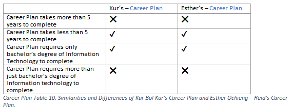The similarities between Kur’s and Matthew’s Ideal jobs are that; both jobs require the applicant to have a qualification in IT from University or previous experience – to be able to apply. Another similarity between the 2 jobs is that – they both require the applicants to be able to manage a fast-paced environment. A final similarity between the 2 jobs is that they both require the applicant to work with teams to be able to solve tasks. The differences between Kur’s and Matthew’s Ideal jobs are that; they are both different – they are not the same role. Another difference would be that Kur’s job – applicant deals with clients, while Matthew’s job applicants might not deal with clients. A final difference between the 2 jobs is that in Kur’s job – the applicant works with a range of different companies in different industries.
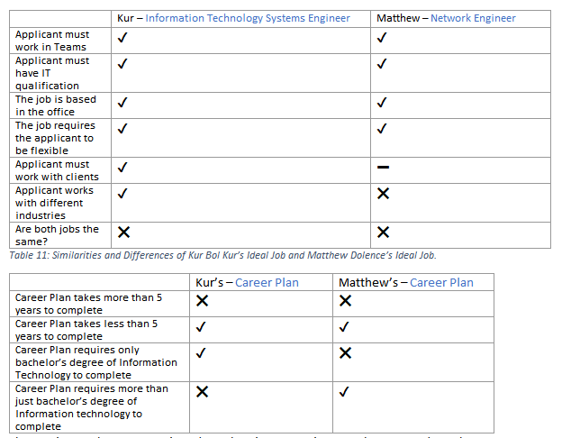 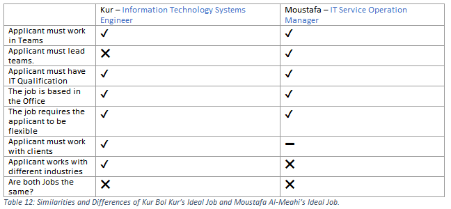The similarities between Kur’s and Matthew’s Career Plans are that; Kur and Matthew must obtain the bachelor’s degree of Information Technology to be able to apply for their jobs. A final similarity between the 2 career plans is that; both career plans are going to take a few years to complete. There an no differences between Kur’s and Matthew’s Career plans.
The similarities between Kur’s and Moustafa’s ideal jobs are that; they both require the applicant to have a qualification in IT from University or previous experience or to be able to apply. Another similarity between the 2 jobs is that – they both require the applicant to be able to manage fast-paced and ever-changing environments. A final similarity between the 2 jobs is that the job requires the applicants to have a Love of Learning. Some differences between Kur’s and Moustafa’s Ideal jobs are that in Moustafa’s Ideal job – the applicant will be able to build, develop, and lead a high performing team of IT service operation ICs (while the applicant in Kur’s ideal job can only be part of a team). Another difference is that both jobs are not the same role. Another difference between the 2 jobs is that – in Kur’s Ideal job the applicant must work with clients – While in Moustafa’s ideal job – the applicant might not have to work with clients. A final difference is that in Kur’s Ideal job – the applicant works with a range of different companies in different industries, while Moustafa’s does not.
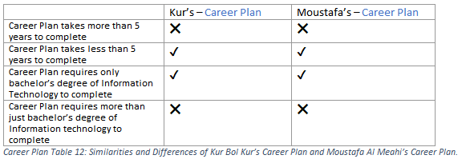The similarities between Kur’s and Moustafa’s Career plans are that; Kur and Moustafa must obtain the bachelor’s degree of Information Technology to be able to apply for their ideal jobs. A final similarity between the 2 career plans – is that they are both going to take a few years to accomplish. There are no differences between Kur’s and Moustafa’s Career Plans.
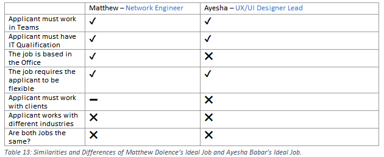Comparison between Matthew’s and all other team members Ideal Jobs: The similarities between Matthew’s and Ayesha’s Ideal jobs are that; they both require the applicant to have a qualification in IT from University or previous experience – to be able to apply. Another similarity between the 2 jobs is that – they both require the applicants to be able to manage a fast-paced and ever-changing environment. A final similarity between the 2 jobs is that they both require the applicants to work in teams to be able to solve tasks. The differences between Matthew’s and Ayesha’s Ideal jobs are that; Matthew’s Ideal job requires the applicant to work at an office – while in Ayesha’s ideal job – the applicant can work at home. A final difference would be that both ideal jobs are different – they are not the same role.
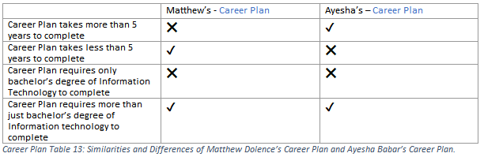The similarities between Matthew’s and Ayesha’s career plans are that; Ayesha and Matthew must obtain the bachelor’s degree of Information Technology to be able to apply for their Ideal jobs. A final similarity between the 2 career plans is that; both career plans are going to take a few years to complete. Some differences between the 2 career plans are that; Matthews career plan will take at least 3 years (due to obtaining only the bachelor’s degree of Information Technology) to be able to apply for Network Engineer. While Ayesha’s career plan will take 10-12 years to complete (due to obtaining the bachelor’s degree of Information Technology and obtaining the bachelor’s degree in arts (digital experience and interaction design)) to be able to apply for UX/UI designer.
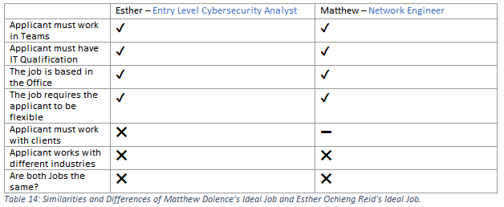The similarities between Matthew’s and Esther’s ideal jobs are that both jobs require the applicant to have a qualification in IT from University or previous experience – to be able to apply. Another similarity between the 2 jobs is that – they both require the applicants to manage a fast-paced and ever-changing environment. A final similarity between the 2 jobs is that they both require the applicant to work in teams to be able to solve tasks. The difference between Matthew’s and Esther’s ideal jobs is that they are different – they are not the same roles.
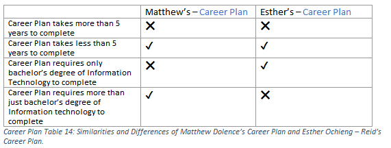The similarities between Matthew’s and Esther’s Career plans are that; Matthew and Esther must obtain the bachelor’s degree of Information Technology to be able to apply for their ideal jobs. A final similarity between the 2 career plans is that; both career plans are going to take a few years to complete. There are no differences between Matthew’s and Esther’s career plans.
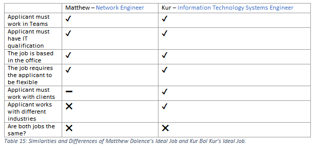The similarities between Matthew’s and Kur’s Ideal jobs are that; both jobs require the applicant to have a qualification in IT from University or previous experience – to be able to apply. Another similarity between the 2 jobs is that – they both require the applicants to be able to manage a fast-paced environment. A final similarity between the 2 jobs is that they both require the applicant to work with teams to be able to solve tasks. The differences between Matthew’s and Kur’s Ideal jobs are that; they are both different – they are not the same role. Another difference would be that Kur’s job – applicant deals with clients, while Matthew’s job – applicant might not deal with clients. A final difference between the 2 jobs – is that in Kur’s ideal job the applicant works with a range of different companies in different industries.
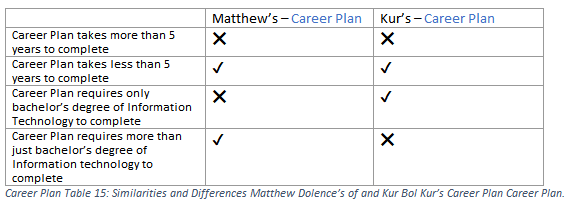The similarities between Matthew’s and Kur’s career plans are that; Matthew and Kur must obtain the bachelor’s degree of Information Technology to be able to apply for their jobs. A final similarity between the 2 career plans is that; both career plans are going to take a few years to complete. There are no differences between Kur’s and Matthew’s Career plans.
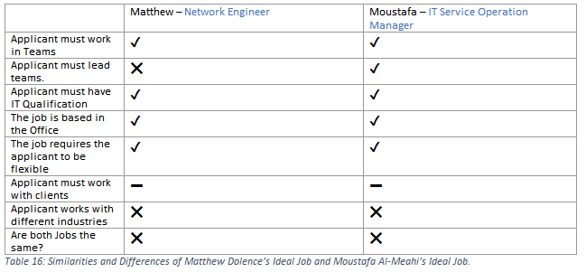The similarities between Matthew’s and Moustafa’s ideal jobs are that; they both require the applicant to have a qualification in IT from University or previous experience to be able to manage fast paced and ever-changing environments. Another similarity between the 2 jobs is that the job requires the applicants to have a Love of Learning. Another similarity between the 2 jobs is that both jobs require the applicants to work in teams to complete tasks. The differences between Matthew’s and Moustafa’s ideal jobs is that in Moustafa’s Ideal job – the applicant will be able to build, develop, and lead a high performing team of IT service operation ICs (while the applicant in Matthew’s ideal job can only be part of a team). A final difference is that the job is different – they are not the same role.
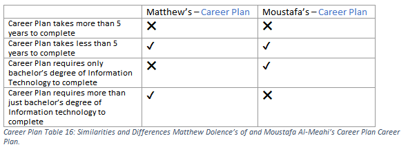The similarities between Matthew’s and Moustafa’s Career plans are that; Matthew and Moustafa must obtain the bachelor’s degree of Information Technology to be able to apply for their ideal jobs. A final similarity between the 2 career plans – is that they are both going to take a few years to accomplish. There are no differences between Matthew’s and Moustafa’s Career plans.

Comparison between Moustafa’s and all other team members Ideal Jobs: The similarities between Moustafa’s and Ayesha’s ideal jobs are that; they both require the applicant to have a qualification in IT from university or previous experience to able to apply. Another similarity between the 2 jobs is that they both require the applicant to work in teams. A final similarity between the 2 jobs is that – they both require the applicants to be able to manage a fast-paced and ever-changing environment. Some differences between Ayesha’s and Moustafa’s are that in Moustafa’s ideal job – the applicant will be able to build, develop, and lead a high performing team of IT service operations ICs (while the applicant in Ayesha’s ideal job can only be part of a team). Another difference between the 2 ideal jobs is that in Moustafa’s job the applicant must work in an office – while the applicant for Ayesha’s ideal job can work at home. A final difference is that both jobs are not the same role.
The similarities between Moustafa’s and Ayesha’s Career Plans are that; Moustafa and Ayesha must obtain the bachelor’s degree of Information Technology to be to apply for their ideal jobs. A final similarity between the 2 career plans – is that they are both going to take a few years to accomplish. The differences between Moustafa’s and Ayesha’s Career plans are that; Ayesha’s career plan is going to take 10-12 years to accomplish (due to obtaining bachelor’s degree of Information Technology and obtaining bachelor’s degree in arts (digital experience and interaction design) to be able to apply for UI/UX designer. While Moustafa’s career plan is going to take 3 years to accomplish (due to only obtaining bachelor’s degree of Information Technology) to be able to apply for IT Service Operation Manager.
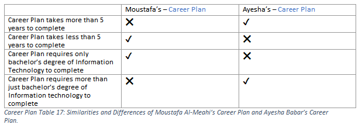The similarities between Moustafa’s and Esther’s ideal jobs ae that; they both require the applicant to have a qualification in IT from University or previous experience to be able to apply. Another similarity between the 2 jobs is that – they both require the applicants to be able to manage fast-paced and ever-changing environment. Some differences Moustafa’s and Esther’s Ideal jobs are that in Moustafa’s ideal job – the applicant will be able to build, develop, and lead a high performing team of IT service operations ICs (while the applicant in Esther’s ideal job can only be part of a team). A final difference is that both jobs are different they are not the same role.
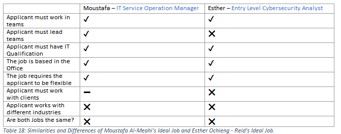The similarities between Moustafa’s and Esther’s Career plans are that; Moustafa and Esther must obtain the bachelor’s degree of Information Technology to be able to apply for their ideal jobs. A final similarity between the 2 career plans – is that they are both going to take a few years to accomplish. There are no differences for Moustafa’s and Esther’s Career Plans.
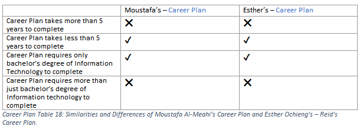The similarities between Moustafa’s and Kur’s ideal jobs are that; they both require the applicant to have a qualification in IT from University or previous experience or to be able to apply. Another similarity between the 2 jobs is that – they both require the applicant to be able to manage fast-paced and ever-changing environments. A final similarity between the 2 jobs is that they job requires the applicants to have a Love of Learning. Some differences between Moustafa’s and Kur’s Ideal jobs are that in Moustafa’s Ideal job – the applicant will be able to build, develop, and lead a high performing team of IT service operation ICs (while the applicant in Kur’s Ideal job can only be part of a team). Another difference is that both jobs are not the same role. Another difference between the 2 jobs is that – in Kur’s ideal job the applicant must work with clients – While in Moustafa’s ideal job – the applicant might not have to work with clients. A final difference is that in Kur’s ideal job – the applicant works with a range of different companies in different industries, while Moustafa’s does not.
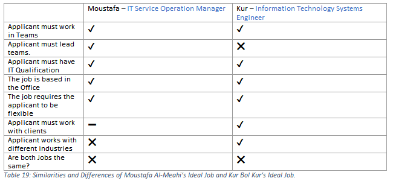The similarities between Moustafa’s and Kur’s Career plans are that; Moustafa and Kur must obtain the bachelor’s degree of Information Technology to be able to apply for their ideal jobs. A final Similarity between the 2 career plans – is that they are both going to take a few years to accomplish. There are no differences between Moustafa’s and Kur’s Career Plans.
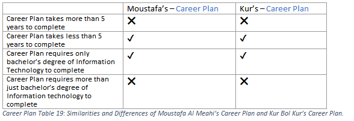The similarities between Moustafa’s and Matthew’s ideal jobs are that; they both require the applicant to have a qualification in IT from University or previous experience to be able to manage fast paced and ever-changing environments. Another similarity between the 2 jobs is that the job requires the applicants to have a Love of Learning. Another similarity between the 2 jobs is that both jobs require the applicants to work in teams to complete tasks. The differences between Moustafa’s and Matthew’s ideal jobs is that in Moustafa’s ideal job – the applicant will be able to build, develop, and lead a high performing team of IT service operation ICs (while the applicant in Matthew’s ideal job can only be part of a team). A final difference is that the jobs are different – they are not the same role.
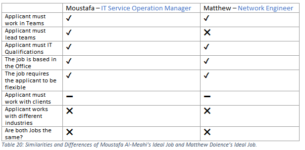The similarities between Moustafa’s Career plans are that; Moustafa and Matthew must obtain the bachelor’s degree of Information Technology to be able to apply for their ideal jobs. A final similarity between the 2 career plans – is that they are both going to take a few years to accomplish. There are no differences between Moustafa’s and Matthew’s Career plans.
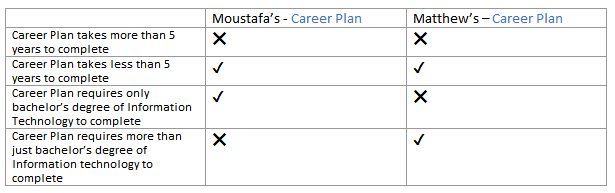